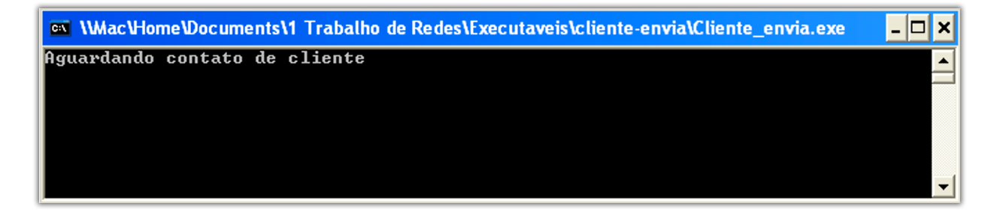

1.0.0
Junho - 2018
André Felipe Magalhães Silva - CCO
- Email: andrefelipe1@hotmail.com
José Luiz Corrêa Junior - CCO
- Email: juninhopc@icloud.com
- Snap: juninhopcItajubá - MG
Universidade Federal de Itajubá - UNIFEI
O Trollsferidor UDP® consiste em um conjunto de 3 programas escritos em C para permitir a transferência de arquivos entre diferentes hosts, embora na compilação padrão e no exemplo esteja sendo utilizada a mesma máquina.
Utiliza o protocolo UDP
A integridade e a entrega dos pacotes é garantida por meio da soma de verificação (checksum), número de sequência, temporizadores e pacotes de reconhecimento.
- Por ser destinado para estudo os codigos utilizados também se encontram disponíveis para serem alterados e recompilados como desejado.
Trollsferidor_UDP
Readme
Readme.md
Readme.html
Readme.pdf
Imagens
cl_envia.png
cl_recebe.pngs
exemplo.png
transferencia.png
serv.png
troll.png
configur.png
Cliente-Envia
Cliente-Envia.c
Cliente-Recebe
Cliente-Recebe.c
Servidor
Servidor.c
Executáveis
Cliente-Envia
Cliente-Envia.exe
imagem.jpg
musica.mp3
texto.txt
CLiente-Recebe
Cliente-Recebe.exe
Servidor
Servidor.exe
respositorio.bs
Os Sistemas Operacional Suportado é o Microsoft Windows
Os Arquivos a serem enviados devem estar na mesmo diretório que o Cliente-Envia.exe
IP como 127.0.0.1, logo, os programas devem ser executados todos na mesma máquina. (por ter fim puramente acadêmico).
Tamanho do buffer = 1024
A porta já está definida como: 10222
Porém mudanças podem ser feitas, exigindo recompilação.
Sinta-se livre para modificar!
O Cliente-Recebe tem como função solicitar a transferência de um arquivo por meio da busca pelo nome do mesmo.
O Cliente_Envia.exe tem como função possuir os arquivos requisitados e os enviar.
Obs.: Apenas fica em escuta após ter sido iniciado, aguardando conexão.
O Servidor.exe tem com função rastrear o possuidor dos arquivos desejados.
| Opção | Função |
|---|---|
1 |
Adicionar dados de arquivo no repositório |
2 |
Continuar sem adicionar novos dados |
Obs.: Depois de selecionada uma opção fica em escuta por um cliente que deseja encontrar um arquivo.
1 ou 2 como entrada.Sistema Operacional: Windows XP
Passos:
1º - Servidor.exe iniciado e escolhida opção "2".
2º - Cliente-Recebe.exe iniciado busacado o aquivo "musica.mp3".

3º - Cliente-Envia.exe somente deixado em execução.

4º - Caso o arquivo buscado exista a transferência já terá iniciado.

5º - Transferência concluida!